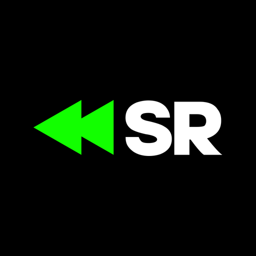

Clips from IShowSpeed streams. Posted daily on YouTube Shorts and Instagram.
SpeedRewind Clipper is a private tool built to run this channel. It takes a finished livestream, finds the moments worth watching, cuts them to vertical video with captions and channel branding, and publishes them on a schedule.
It is used by one person to post to their own accounts. It is not a product, it is not offered to anyone else, and it does not sign anybody else in.